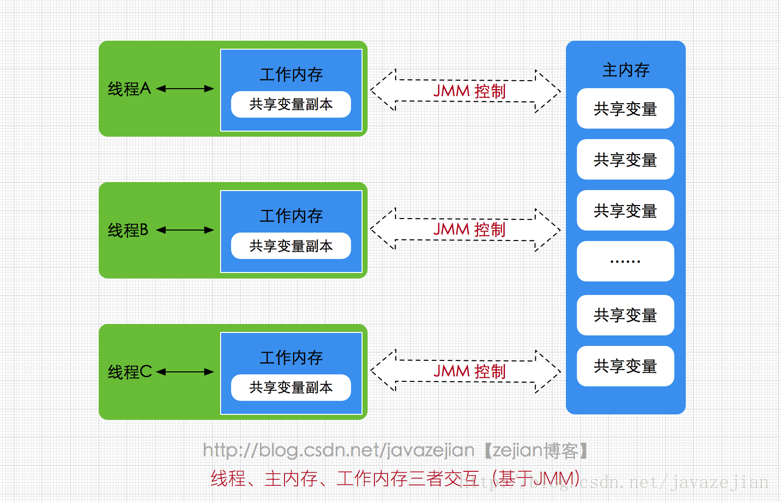
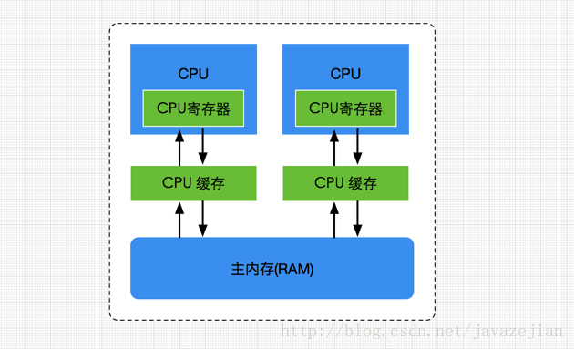
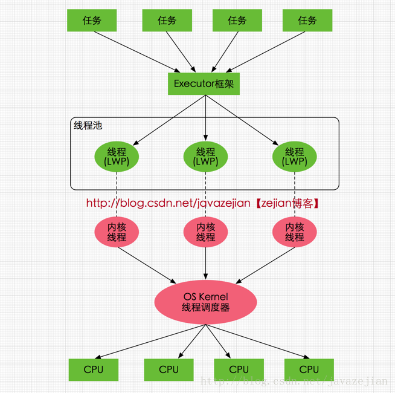
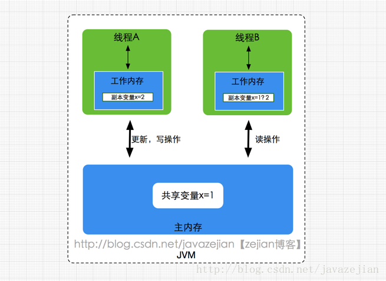
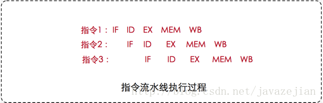
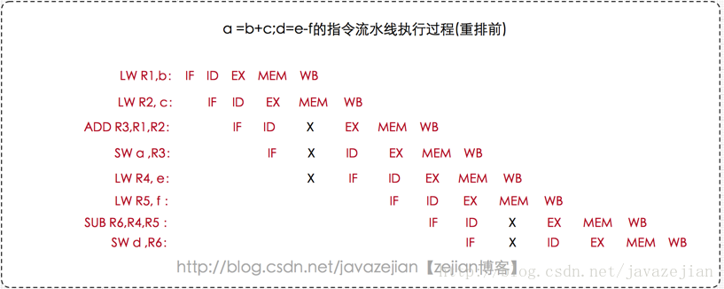
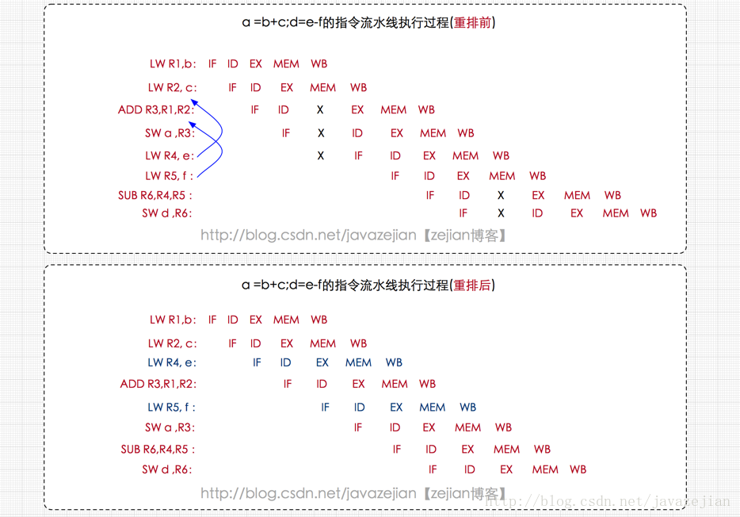

1 JMM1.1 主内存1.2 工作内存2 硬件内存架构与JMM2.1 硬件内存架构2.2 Java线程与硬件处理器2.3 Java内存模型与硬件内存架构的关系3 JMM存在的必要性3.1 概念理解3.1.1 原子性3.1.2 指令重排3.1.2.1 编译器重排3.1.2.2 处理器指令重排3.1.2.3 可见性4.有序性3.2 JMM提供的解决方案happens-before 原则
1 JMM
Java内存模型(即Java Memory Model，简称JMM)本身是一种抽象的概念，并不真实存在，它描述的是一组规则或规范，通过这组规范定义了程序中各个变量（包括实例字段、静态字段和构成数组对象的元素）的访问方式。
由于JVM运行程序的实体是线程，而每个线程创建时JVM都会为其创建一个工作内存(有些地方称为栈空间)，用于存储线程私有的数据，而Java内存模型中规定所有变量都存储在主内存，主内存是共享内存区域，所有线程都可以访问，但线程对变量的操作(读取赋值等)必须在工作内存中进行，首先要将变量从主内存拷贝的自己的工作内存空间，然后对变量进行操作，操作完成后再将变量写回主内存，不能直接操作主内存中的变量，工作内存中存储着主内存中的变量副本拷贝，前面说过，工作内存是每个线程的私有数据区域，因此不同的线程间无法访问对方的工作内存，线程间的通信(传值)必须通过主内存来完成，其简要访问过程如下图

需要注意的是，JMM与Java内存区域的划分是不同的概念层次，更恰当说JMM描述的是一组规则，通过这组规则控制程序中各个变量在共享数据区域和私有数据区域的访问方式，JMM是围绕原子性，有序性、可见性展开的(稍后会分析)。
JMM与Java内存区域唯一相似点，都存在共享数据区域和私有数据区域，在JMM中主内存属于共享数据区域，从某个程度上讲应该包括了堆和方法区，而工作内存属于线程私有数据区域，从某个程度上讲则应该包括程序计数器、虚拟机栈以及本地方法栈。或许在某些地方，我们可能会看见主内存被描述为堆内存，工作内存被称为线程栈，实际上他们表达的都是同一个含义。
1.1 主内存
主要存储的是Java实例对象，所有线程创建的实例对象都存放在主内存中，不管该实例对象是成员变量还是方法中的本地变量(也称局部变量)，当然也包括了共享的类信息、常量、静态变量。由于是共享数据区域，多条线程对同一个变量进行访问可能会存在线程安全问题。
1.2 工作内存
主要存储当前方法的所有本地变量信息(工作内存中存储着主内存中的变量副本拷贝)，每个线程只能访问自己的工作内存，即线程中的本地变量对其它线程是不可见的，就算是两个线程执行的是同一段代码，它们也会各自在自己的工作内存中创建属于当前线程的本地变量，当然也包括了字节码行号指示器、相关Native方法的信息。注意，由于工作内存是每个线程的私有数据，线程间无法相互访问工作内存，因此存储在工作内存的数据不存在线程安全问题。
弄清楚主内存和工作内存后，接下来了解一下主内存与工作内存的数据存储类型以及操作方式，根据虚拟机规范，对于一个实例对象中的成员方法而言，如果方法中包含的本地变量是基本数据类型，将直接存储在工作内存的帧栈结构中，但倘若本地变量是引用类型，那么该变量的引用会存储在工作内存的帧栈中，而对象实例将存储在主内存(共享数据区域，堆)中。但对于实例对象的成员变量，不管它是基本数据类型还是引用类型，都会被存储到堆区。至于static变量以及类本身相关信息将会存储在主内存中。需要注意的是，在主内存中的实例对象可以被多线程共享，倘若两个线程同时调用了同一个对象的同一个方法，那么两条线程会将要操作的数据拷贝一份到自己的工作内存中，执行完成操作后才刷新到主内存，简单示意图如下所示：

2 硬件内存架构与JMM
2.1 硬件内存架构

正如上图所示，经过简化的CPU与内存操作的简易图，实际上没有这么简单，这里为了理解方便，我们省去了南北桥并将三级缓存统一为CPU缓存(有些CPU只有二级缓存，有些CPU有三级缓存)。就目前计算机而言，一般拥有多个CPU并且每个CPU可能存在多个核心，多核是指在一枚处理器(CPU)中集成两个或多个完整的计算引擎(内核)，这样就可以支持多任务并行执行，从多线程的调度来说，每个线程都会映射到各个CPU核心中并行运行。在CPU内部有一组CPU寄存器，寄存器是cpu直接访问和处理的数据，是一个临时放数据的空间。一般CPU都会从内存取数据到寄存器，然后进行处理，但由于内存的处理速度远远低于CPU，导致CPU在处理指令时往往花费很多时间在等待内存做准备工作，于是在寄存器和主内存间添加了CPU缓存，CPU缓存比较小，但访问速度比主内存快得多，如果CPU总是操作主内存中的同一址地的数据，很容易影响CPU执行速度，此时CPU缓存就可以把从内存提取的数据暂时保存起来，如果寄存器要取内存中同一位置的数据，直接从缓存中提取，无需直接从主内存取。需要注意的是，寄存器并不每次数据都可以从缓存中取得数据，万一不是同一个内存地址中的数据，那寄存器还必须直接绕过缓存从内存中取数据。所以并不每次都得到缓存中取数据，这种现象有个专业的名称叫做缓存的命中率，从缓存中取就命中，不从缓存中取从内存中取，就没命中，可见缓存命中率的高低也会影响CPU执行性能，这就是CPU、缓存以及主内存间的简要交互过程，总而言之当一个CPU需要访问主存时，会先读取一部分主存数据到CPU缓存(当然如果CPU缓存中存在需要的数据就会直接从缓存获取)，进而再读取CPU缓存到寄存器，当CPU需要写数据到主存时，同样会先刷新寄存器中的数据到CPU缓存，然后再把数据刷新到主内存中。
2.2 Java线程与硬件处理器
了解完硬件的内存架构后，接着了解JVM中线程的实现原理，理解线程的实现原理，有助于我们了解Java内存模型与硬件内存架构的关系。
在Window系统和Linux系统上，Java线程的实现是基于一对一的线程模型，所谓的一对一模型，实际上就是通过语言级别层面程序去间接调用系统内核的线程模型，即我们在使用Java线程时，Java虚拟机内部是转而调用当前操作系统的内核线程来完成当前任务。
这里需要了解一个术语，内核线程(Kernel-Level Thread，KLT)，它是由操作系统内核(Kernel)支持的线程，这种线程是由操作系统内核来完成线程切换，内核通过操作调度器进而对线程执行调度，并将线程的任务映射到各个处理器上。每个内核线程可以视为内核的一个分身，这也就是操作系统可以同时处理多任务的原因。
由于我们编写的多线程程序属于语言层面的，程序一般不会直接去调用内核线程，取而代之的是一种轻量级的进程(Light Weight Process)，也是通常意义上的线程，由于每个轻量级进程都会映射到一个内核线程，因此我们可以通过轻量级进程调用内核线程，进而由操作系统内核将任务映射到各个处理器，这种轻量级进程与内核线程间1对1的关系就称为一对一的线程模型。如下图

如图所示，每个线程最终都会映射到CPU中进行处理，如果CPU存在多核，那么一个CPU将可以并行执行多个线程任务。
2.3 Java内存模型与硬件内存架构的关系
通过对前面的硬件内存架构、Java内存模型以及Java多线程的实现原理的了解，我们应该已经意识到，多线程的执行最终都会映射到硬件处理器上进行执行，但Java内存模型和硬件内存架构并不完全一致。
对于硬件内存来说只有寄存器、缓存内存、主内存的概念，并没有工作内存(线程私有数据区域)和主内存(堆内存)之分，也就是说Java内存模型对内存的划分对硬件内存并没有任何影响，因为JMM只是一种抽象的概念，是一组规则，并不实际存在，不管是工作内存的数据还是主内存的数据，对于计算机硬件来说都会存储在计算机主内存中，当然也有可能存储到CPU缓存或者寄存器中，因此总体上来说，Java内存模型和计算机硬件内存架构是一个相互交叉的关系，是一种抽象概念划分与真实物理硬件的交叉。(注意对于Java内存区域划分也是同样的道理)
3 JMM存在的必要性
在明白了Java内存区域划分、硬件内存架构、Java多线程的实现原理与Java内存模型的具体关系后，接着来谈谈Java内存模型存在的必要性。由于JVM运行程序的实体是线程，而每个线程创建时JVM都会为其创建一个工作内存(有些地方称为栈空间)，用于存储线程私有的数据，线程与主内存中的变量操作必须通过工作内存间接完成，主要过程是将变量从主内存拷贝的每个线程各自的工作内存空间，然后对变量进行操作，操作完成后再将变量写回主内存，如果存在两个线程同时对一个主内存中的实例对象的变量进行操作就有可能诱发线程安全问题。
如下图，主内存中存在一个共享变量x，现在有A和B两条线程分别对该变量x=1进行操作，A/B线程各自的工作内存中存在共享变量副本x。假设现在A线程想要修改x的值为2，而B线程却想要读取x的值，那么B线程读取到的值是A线程更新后的值2还是更新前的值1呢？
答案是不确定，即B线程有可能读取到A线程更新前的值1，也有可能读取到A线程更新后的值2，这是因为工作内存是每个线程私有的数据区域，而线程A操作变量x时，首先是将变量从主内存拷贝到A线程的工作内存中，然后对变量进行操作，操作完成后再将变量x写回主内，而对于B线程的也是类似的，这样就有可能造成主内存与工作内存间数据存在一致性问题，假如A线程修改完后正在将数据写回主内存，而B线程此时正在读取主内存，即将x=1拷贝到自己的工作内存中，这样B线程读取到的值就是x=1，但如果A线程已将x=2写回主内存后，B线程才开始读取的话，那么此时B线程读取到的就是x=2，但到底是哪种情况先发生呢？这是不确定的，这也就是所谓的线程安全问题。

为了解决类似上述的问题，JVM定义了一组规则，通过这组规则来决定一个线程对共享变量的写入何时对另一个线程可见，这组规则也称为Java内存模型（即JMM），JMM是围绕着程序执行的原子性、有序性、可见性展开的。
3.1 概念理解
3.1.1 原子性
原子性指的是一个操作是不可中断的，即使是在多线程环境下，一个操作一旦开始就不会被其他线程影响。
比如对于一个静态变量int x，两条线程同时对他赋值，线程A赋值为1，而线程B赋值为2，不管线程如何运行，最终x的值要么是1，要么是2，线程A和线程B间的操作是没有干扰的，这就是原子性操作，不可被中断的特点。有点要注意的是，对于32位系统的来说，long类型数据和double类型数据的读写并非原子性的(对于基本数据类型：byte、short、int、float、boolean、char的读写是原子操作)，也就是说如果存在两条线程同时对long类型或者double类型的数据进行读写是存在相互干扰的，因为对于32位虚拟机来说，每次原子读写是32位的，而long和double则是64位的存储单元，这样会导致一个线程在写时，操作完前32位的原子操作后，轮到B线程读取时，恰好只读取到了后32位的数据，这样可能会读取到一个既非原值又不是线程修改值的变量，它可能是“半个变量”的数值，即64位数据被两个线程分成了两次读取。但也不必太担心，因为读取到“半个变量”的情况比较少见，至少在目前的商用的虚拟机中，几乎都把64位的数据的读写操作作为原子操作来执行，因此对于这个问题不必太在意，知道这么回事即可。
3.1.2 指令重排
计算机在执行程序时，为了提高性能，编译器和处理器的常常会对指令做重排，一般分以下3种：
- 编译器优化的重排 编译器在不改变单线程程序语义的前提下，可以重新安排语句的执行顺序。
- 指令并行的重排 现代处理器采用了指令级并行技术来将多条指令重叠执行。如果不存在数据依赖性(即后一个执行的语句无需依赖前面执行的语句的结果)，处理器可以改变语句对应的机器指令的执行顺序。
- 内存系统的重排 由于处理器使用缓存和读写缓存冲区，这使得加载(load)和存储(store)操作看上去可能是在乱序执行，因为三级缓存的存在，导致内存与缓存的数据同步存在时间差。
其中编译器优化的重排属于编译期重排，指令并行的重排和内存系统的重排属于处理器重排，在多线程环境中，这些重排优化可能会导致程序出现内存可见性问题，下面分别阐明这两种重排优化可能带来的问题
3.1.2.1 编译器重排
编译器在不改变单线程程序语义的前提下，可以重新安排语句的执行顺序。 示例：
xxxxxxxxxx线程 1 线程 21： x2 = a ; 3: x1 = b ;2: b = 1; 4: a = 2 ;
两个线程同时执行，分别有1、2、3、4四段执行代码，其中1、2属于线程1 ， 3、4属于线程2 ，从程序的执行顺序上看，似乎不太可能出现x1 = 1 和x2 = 2 的情况，但实际上这种情况是有可能发现的，因为如果编译器对这段程序代码执行重排优化后，可能出现下列情况：
xxxxxxxxxx线程 1 线程 22: b = 1; 4: a = 2 ;1：x2 = a ; 3: x1 = b ;
这种执行顺序下就有可能出现x1 = 1 和x2 = 2 的情况，这也就说明在多线程环境下，由于编译器优化重排的存在，两个线程中使用的变量能否保证一致性是无法确定的。
3.1.2.2 处理器指令重排
先了解一下指令重排的概念，处理器指令重排是对CPU的性能优化，从指令的执行角度来说一条指令可以分为多个步骤完成，如下：
- 取指 IF
- 译码和取寄存器操作数 ID
- 执行或者有效地址计算 EX
- 存储器访问 MEM
- 写回 WB
CPU在工作时，需要将上述指令分为多个步骤依次执行(注意硬件不同有可能不一样)，由于每一步会使用到不同的硬件操作，比如取指时会只有PC寄存器和存储器，译码时会执行到指令寄存器组，执行时会执行ALU(算术逻辑单元)、写回时使用到寄存器组。为了提高硬件利用率，CPU指令是按流水线技术来执行的，如下：

从图中可以看出当指令1还未执行完成时，第2条指令便利用空闲的硬件开始执行，这样做是有好处的，如果每个步骤花费1ms，那么如果第2条指令需要等待第1条指令执行完成后再执行的话，则需要等待5ms，但如果使用流水线技术的话，指令2只需等待1ms就可以开始执行了，这样就能大大提升CPU的执行性能。
虽然流水线技术可以大大提升CPU的性能，但不幸的是一旦出现流水中断，所有硬件设备将会进入一轮停顿期，当再次弥补中断点可能需要几个周期，这样性能损失也会很大，就好比工厂组装手机的流水线，一旦某个零件组装中断，那么该零件往后的工人都有可能进入一轮或者几轮等待组装零件的过程。
因此我们需要尽量阻止指令中断的情况，指令重排就是其中一种优化中断的手段，我们通过一个例子来阐明指令重排是如何阻止流水线技术中断的:
xxxxxxxxxxa = b + c ;d = e + f ;
下面通过汇编指令展示了上述代码在CPU执行的处理过程:

LW R1,bLW表示 load，
LW R1,b表示把b的值加载到寄存器R1中。LW R2,c表示把c的值加载到寄存器R2中。
ADD R3,R1,R2ADD指令表示加法，把R1 、R2的值相加，并存入R3寄存器中。
SW a,R3SW表示 store，即将R3寄存器的值保持到变量a中。
LW R4,e表示把e的值加载到寄存器R4中。
LW R5,f表示把f的值加载到寄存器R5中。
SUB R6,R4,R5SUB 指令表示减法，把R4 、R5的值相减，并存入R6寄存器中。
SW d,R6表示将R6寄存器的值保持到变量d中。
上述便是汇编指令的执行过程，在某些指令上存在X的标志，X代表中断的含义，也就是只要有X的地方就会导致指令流水线技术停顿，同时也会影响后续指令的执行，可能需要经过1个或几个指令周期才可能恢复正常，那为什么停顿呢？
这是因为部分数据还没准备好，如执行ADD指令时，需要使用到前面指令的数据R1，R2，而此时R2的MEM操作没有完成，即未拷贝到存储器中，这样加法计算就无法进行，必须等到MEM操作完成后才能执行，也就因此而停顿了，其他指令也是类似的情况。
前面阐述过，停顿会造成CPU性能下降，因此我们应该想办法消除这些停顿，这时就需要使用到指令重排了，如下图，既然ADD指令需要等待，那我们就利用等待的时间做些别的事情，如把LW R4,e 和 LW R5,f 移动到前面执行，毕竟LW R4,e 和 LW R5,f执行并没有数据依赖关系，对他们有数据依赖关系的SUB R6,R5,R4指令在R4、R5加载完成后才执行的，没有影响，过程如下：

正如上图所示，所有的停顿都完美消除了，指令流水线也无需中断了，这样CPU的性能也能带来很好的提升，这就是处理器指令重排的作用。
关于编译器重排以及指令重排(这两种重排我们后面统一称为指令重排)相关内容已阐述清晰了，我们必须意识到对于单线程而言，指令重排几乎不会带来任何影响，毕竟重排的前提是保证串行语义执行的一致性，但对于多线程环境而已，指令重排就可能导致严重的程序轮序执行问题，如下:
xxxxxxxxxxclass MixedOrder{int a = 0;boolean flag = false;public void writer(){a = 1;flag = true;}public void read(){if(flag){int i = a + 1;}}}
如上述代码，同时存在线程A和线程B对该实例对象进行操作，其中A线程调用写入方法，而B线程调用读取方法，由于指令重排等原因，可能导致程序执行顺序变为如下：
xxxxxxxxxx线程A 线程Bwriter： read：1:flag = true; 1:flag = true;2:a = 1; 2: a = 0 ; //误读3: i = 1 ;
由于指令重排的原因，线程A的flag置为true被提前执行了，而a赋值为1的程序还未执行完，此时线程B，恰好读取flag的值为true，直接获取a的值（此时B线程并不知道a为0）并执行i赋值操作，结果i的值为1，而不是预期的2，这就是多线程环境下，指令重排导致的程序乱序执行的结果。因此，请记住，指令重排只会保证单线程中串行语义的执行的一致性，但并不会关心多线程间的语义一致性。
3.1.2.3 可见性
理解了指令重排现象后，可见性容易了，可见性指的是当一个线程修改了某个共享变量的值，其他线程是否能够马上得知这个修改的值。对于串行程序来说，可见性是不存在的，因为我们在任何一个操作中修改了某个变量的值，后续的操作中都能读取这个变量值，并且是修改过的新值。但在多线程环境中可就不一定了，前面我们分析过，由于线程对共享变量的操作都是线程拷贝到各自的工作内存进行操作后才写回到主内存中的，这就可能存在一个线程A修改了共享变量x的值，还未写回主内存时，另外一个线程B又对主内存中同一个共享变量x进行操作，但此时A线程工作内存中共享变量x对线程B来说并不可见，这种工作内存与主内存同步延迟现象就造成了可见性问题，另外指令重排以及编译器优化也可能导致可见性问题，通过前面的分析，我们知道无论是编译器优化还是处理器优化的重排现象，在多线程环境下，确实会导致程序轮序执行的问题，从而也就导致可见性问题。
4.有序性
有序性是指对于单线程的执行代码，我们总是认为代码的执行是按顺序依次执行的，这样的理解并没有毛病，毕竟对于单线程而言确实如此，但对于多线程环境，则可能出现乱序现象，因为程序编译成机器码指令后可能会出现指令重排现象，重排后的指令与原指令的顺序未必一致，要明白的是，在Java程序中，倘若在本线程内，所有操作都视为有序行为，如果是多线程环境下，一个线程中观察另外一个线程，所有操作都是无序的，前半句指的是单线程内保证串行语义执行的一致性，后半句则指指令重排现象和工作内存与主内存同步延迟现象。
3.2 JMM提供的解决方案
在理解了原子性、可见性以及有序性问题后，看看JMM是如何保证的，在Java内存模型中都提供一套解决方案供Java工程师在开发过程使用。
- 对于原子性问题，除了JVM自身提供的对基本数据类型读写操作的原子性外，对于方法级别或者代码块级别的原子性操作，可以使用
synchronized关键字或者重入锁(ReentrantLock)保证程序执行的原子性。 - 对于工作内存与主内存同步延迟现象导致的可见性问题，可以使用
synchronized关键字或者volatile关键字解决，它们都可以使一个线程修改后的变量立即对其他线程可见。 - 对于指令重排导致的可见性问题和有序性问题，则可以利用
volatile关键字解决，因为volatile的另外一个作用就是禁止重排序优化，关于volatile稍后会进一步分析。 - 除了靠sychronized和volatile关键字来保证原子性、可见性以及有序性外，JMM内部还定义一套happens-before 原则来保证多线程环境下两个操作间的原子性、可见性以及有序性。
happens-before 原则
倘若在程序开发中，仅靠sychronized和volatile关键字来保证原子性、可见性以及有序性，那么编写并发程序可能会显得十分麻烦，幸运的是，在Java内存模型中，还提供了happens-before 原则来辅助保证程序执行的原子性、可见性以及有序性的问题，它是判断数据是否存在竞争、线程是否安全的依据，happens-before 原则内容如下：
- 程序顺序原则 即在一个线程内必须保证语义串行性，也就是说按照代码顺序执行。
- 锁规则 解锁(unlock)操作必然发生在后续的同一个锁的加锁(lock)之前，也就是说，如果对于一个锁解锁后，再加锁，那么加锁的动作必须在解锁动作之后(同一个锁)。
- volatile规则 volatile变量的写，先发生于读，这保证了volatile变量的可见性，简单的理解就是，volatile变量在每次被线程访问时，都强迫从主内存中读该变量的值，而当该变量发生变化时，又会强迫将最新的值刷新到主内存，任何时刻，不同的线程总是能够看到该变量的最新值。
- 线程启动规则 线程的start()方法先于它的每一个动作，即如果线程A在执行线程B的start方法之前修改了共享变量的值，那么当线程B执行start方法时，线程A对共享变量的修改对线程B可见。
- 传递性规则 A先于B ，B先于C， 那么A必然先于C。
- 线程终止规则 线程的所有操作先于线程的终结，Thread.join()方法的作用是等待当前执行的线程终止。假设在线程B终止之前，修改了共享变量，线程A从线程B的join方法成功返回后，线程B对共享变量的修改将对线程A可见。
- 线程中断规则 对线程 interrupt()方法的调用先行发生于被中断线程的代码检测到中断事件的发生，可以通过Thread.interrupted() 方法检测线程是否中断。
- 对象终结规则 对象的构造函数执行、结束优先于finalize()方法。
上述8条原则无需手动添加任何同步手段(synchronized|volatile)即可达到效果，下面我们结合前面的案例演示这8条原则如何判断线程是否安全，如下：
xxxxxxxxxxclass MixedOrder{int a = 0;boolean flag = false;public void writer(){a = 1;flag = true;}public void read(){if(flag){int i = a + 1;}}}
同样的道理，存在两条线程A和B，线程A调用实例对象的writer()方法，而线程B调用实例对象的read()方法，线程A先启动而线程B后启动，那么线程B读取到的i值是多少呢？
现在依据8条原则，由于存在两条线程同时调用，因此程序次序原则不合适。writer()方法和read()方法都没有使用同步手段，锁规则也不合适。没有使用volatile关键字，volatile变量原则不适应。线程启动规则、线程终止规则、线程中断规则、对象终结规则、传递性和本次测试案例也不合适。线程A和线程B的启动时间虽然有先后，但线程B执行结果却是不确定，也是说上述代码没有适合8条原则中的任意一条，也没有使用任何同步手段，所以上述的操作是线程不安全的，因此线程B读取的值自然也是不确定的。修复这个问题的方式很简单，要么给writer()方法和read()方法添加同步手段，如synchronized或者给变量flag添加volatile关键字，确保线程A修改的值对线程B总是可见。